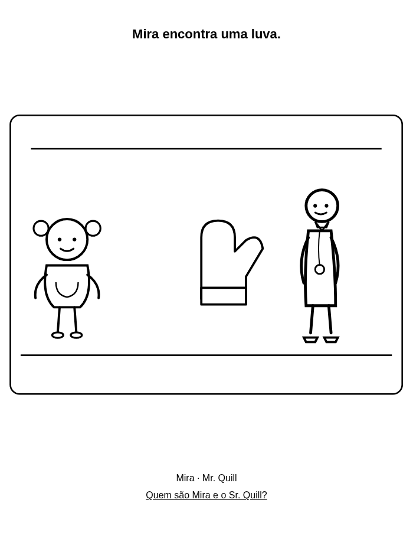
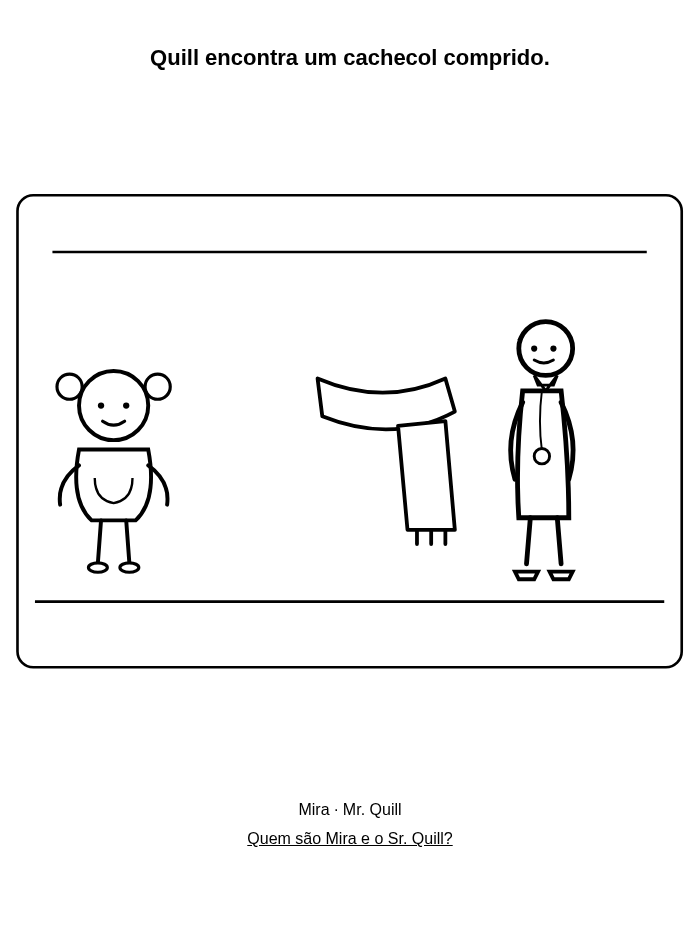
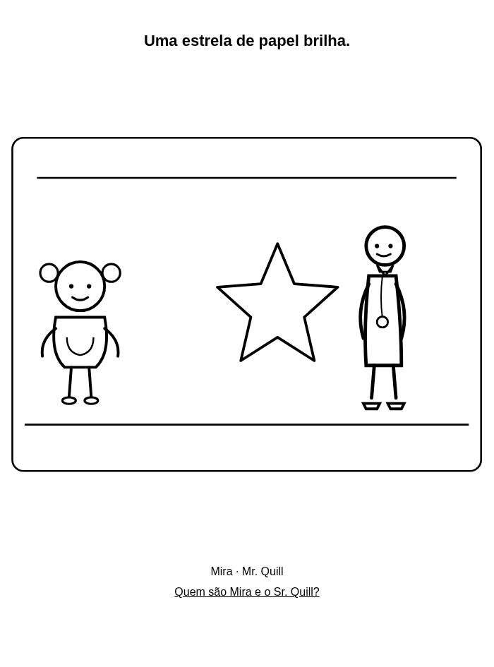
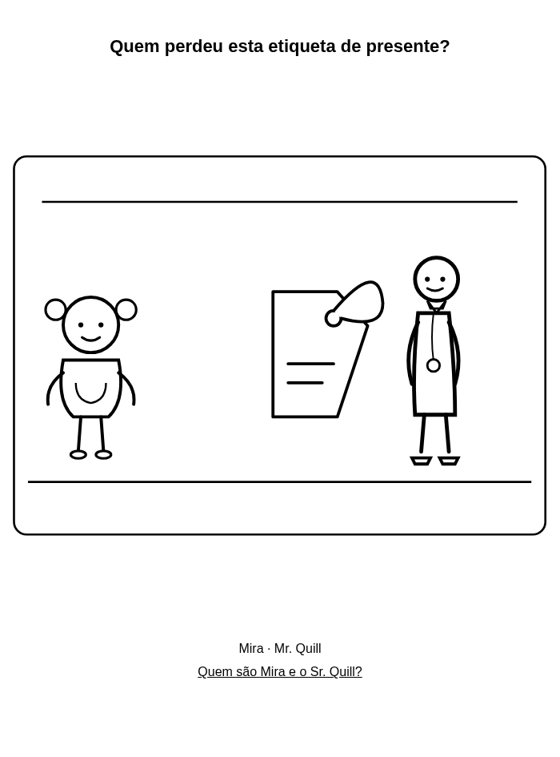
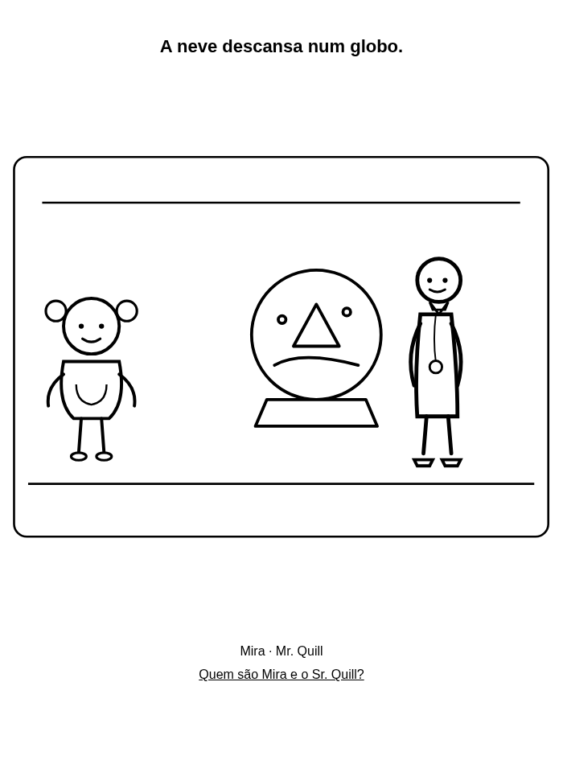
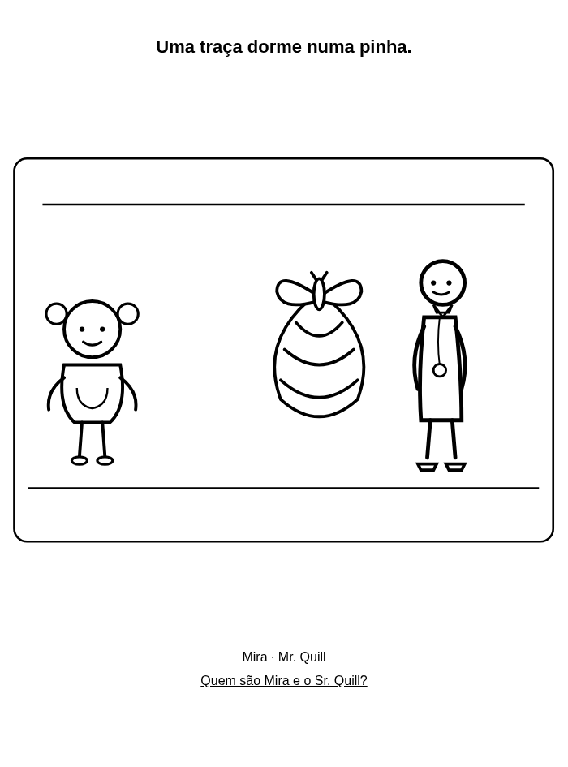

Desenhos de Natal para colorir grátis – PDF para crianças dos 4 aos 8 anos
Seis desenhos de Natal e inverno para colorir com Mira e o Sr. Quill. PDF grátis em A4 e Carta para casa ou escola.
Para famílias e professores: imprima a 100% em tons de cinza. Use lápis de cera. Grátis para casa e escola.
Os 6 desenhos
A4 PDF · US Letter PDF





Quem são Mira e o Sr. Quill?
Mira é curiosa. O Sr. Quill ajuda a ir devagar e reparar nas coisas pequenas. Assistam juntos ao desenho animado grátis.
Quem são Mira e o Sr. Quill?